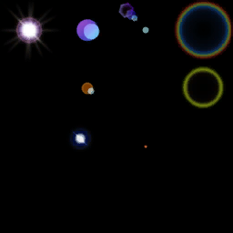

SECTOR 01 / FIELD EXPLORATION
A familiar world.
A new frontier.
Jelajahi geometri asli Platform01 dari browser. Terbang melintasi sektor dan temukan lima beacon untuk menyelesaikan ekspedisi.
—ORIGINAL VERTICES
05SIGNAL BEACONS
WEBGLBROWSER NATIVE
Map, tekstur, langit, dan preview armor Bellato memakai aset asli. Mode ekspedisi memakai kontrol terbang; misi beacon adalah gameplay prototype tambahan.
Aset & status pembacaan

am16.dds · 256 × 256Tekstur berhasil didekode. Tekstur terrain R3T sudah terpasang.